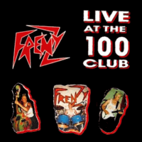

Frenzy - Live At The 100 Club (Album, 1988)
01 - I See Red (3:48)
02 - Misdemeanour (3:46)
03 - Love Is The Drug (5:17)
04 - House On Fire (4:06)
05 - Howard Hughes (5:08)
06 - The Hunt (4:04)
07 - Clockwork Toy (4:55)
08 - Migraine (3:57)
09 - Gotta Go! (4:22)
10 - It's All Over Now (7:37)
11 - Robot Riot (4:12)
© Nervous Records :: [NERD 033]
Notes
United Kingdom, England.
Steve Whitehouse - Bass, Vocals
Adam Seviour - Drums, Backing vocals
Kevin Saunders - Guitar, Backing vocals
Engineer - Larry Baker
Produced and engineered at Amber Recording Studio
Recorded live at '100' Club London on 11th September 1986
reference information: Discogs®
Review
097/366 (Project 366)
Psychobilly Live! Perhaps, gig show is the most attractive point for the psychos.
A relatively atmospheric introduction from the band and the show begins! Significant sound effects, power, energy, variety, echo and reverb, crazy and mad tune, wound up sound of bass and rough mood. This applies not only to the first track, but to the entire set list. However, "I See Red" is a quite special one song. This live performance of the song ended with a slight disagreement with the audience - but cheers up and all is fine. Second track "Misdemeanour" is a very Frenzy psychobilly song. Something for large venue and full excitement with psycho, wild and raw mood. Another point is a 1980s experimental sound of new wave and revival shades. Third track "Love Is The Drug" with 80's punk-rock tone and even post-punk feelings, especially with John on saxophone. The next song "House On Fire" is a great entertainment, hard and heavy tune! The fifth song "Howard Hughes" is a blend of music. Sensations of something metal, of something hard rock, streetpunk, post-punk, rockabilly, psychobilly. So, real Frenzy sound! "The Hunt" make feelings of live gig much more visible - fun and sweat with high voltage performing. So you are all in tune when "Clockwork Toy" appears. Just blows into psycho groove. Mighty sensations.
...